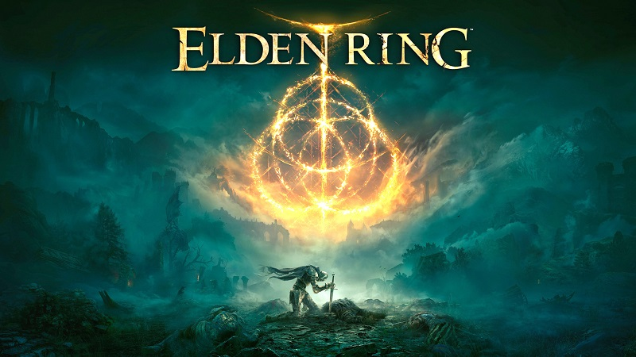
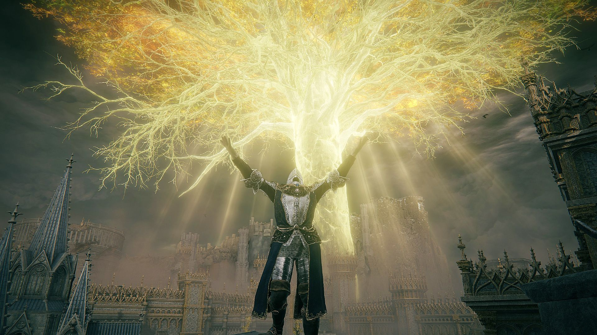

Elden Ring to gra wywodząca się z mojego ulubionego gatunku gier, czyli souls-like. Jest to produkcja firmy FromSoftware,
która specjalizuje się w tym gatunku. Jest to tytuł, który był wyczekiwany przez ogromną liczbę graczy,a gdy gra otrzymała swój pierwszy trailer,
wszyscy byli zachwyceni i podekscytowani.

Gra otrzymała wiele nagród, ale najważniejszą i najbardziej prestiżową jest nagroda "Game of the Year",
co uważam było zasłużone. Tytuł ten ma niesamowicie duży otwarty świat, który warto zwiedzić, gdyż w każdym miejscu na gracza czeka coś ciekawego i wymagającego.
Tak jak w każdej grze tego studia, wielką rolę odgrywają świetnie stworzone walki z bossami, a także genialny, przepiękny soundtrack.
Niestety przez swój dosyć wysoki próg wejścia dla nowego gracza tego gatunku, gra nie przypadnie do gustu każdemu.

Mi jednak ta produkcja przypomniała, dlaczego tak bardzo
uwielbiam dzieła studia FromSoftware, a po ukończeniu stała się moją ulubioną grą i zapadła mi w pamięci na bardzo długo. Osobiście bardzo polecam.